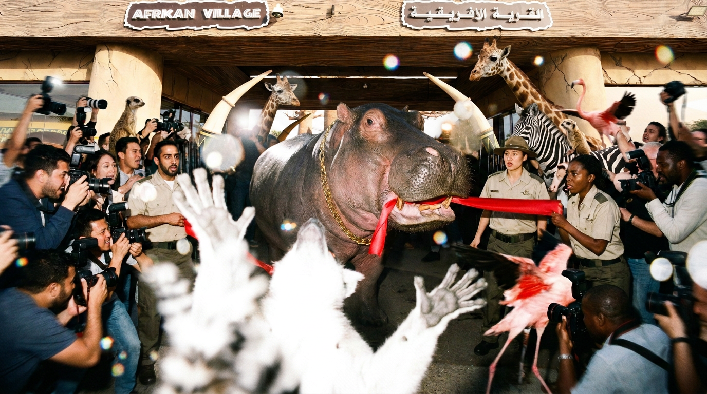

Front Page
Crocodile Turns Things Turn Salty At Park Opening Rehearsal
Hippo intervenes, crocodile objects, and tortoise brokers compromise before ceremony loses all remaining dignity entirely.
The official rehearsal for Dubai Safari Park’s season opening faced an unexpected delay yesterday after the appointed chief guest, a saltwater crocodile, failed to appear for the ceremonial ribbon cutting on time.
The crocodile had been selected for the role due to what organisers described as “a natural understanding of sharp gestures.” However, when the ribbon was placed, the photographers assembled, and the opening music began, the chief guest was still absent.
After several minutes of silence, the hippo stepped forward and took a decisive chew at the ribbon. The act was not formally approved, though some witnesses admitted it moved the programme along.
The crocodile arrived shortly after and objected strongly to what he called “a clear breach of ceremonial protocol.” Sources confirmed tears were visible, though the newsroom has been advised to avoid speculation.
The hippo responded with a series of grunts interpreted as “first come, first served.” Tensions eased only when a tortoise suggested that the hippo be credited with the rehearsal opening, while the crocodile retain the official opening duties.
The proposal was accepted slowly, which helped.